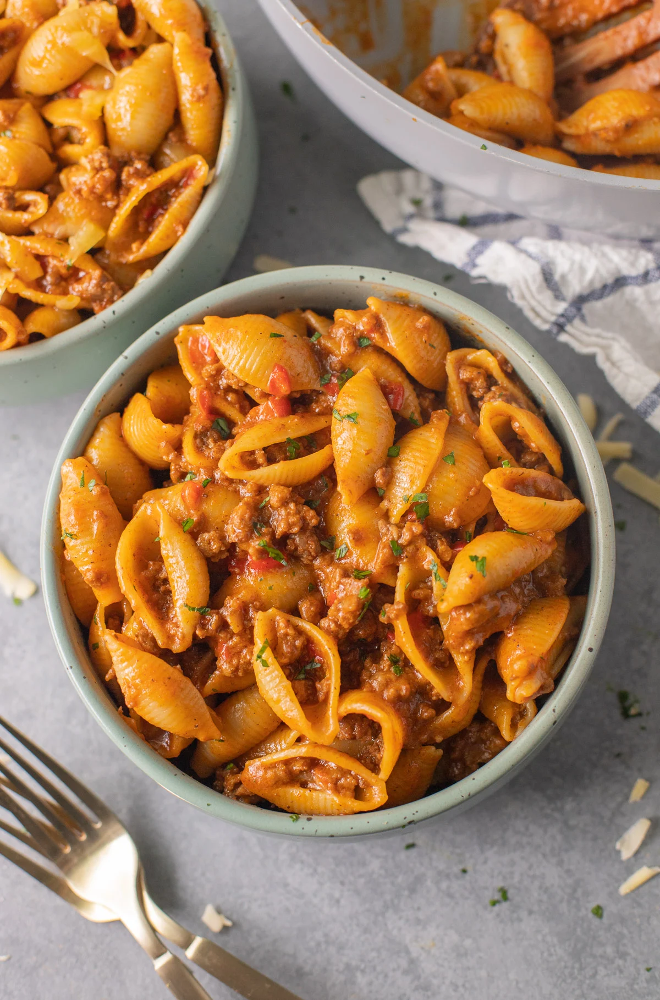

Home
Taco Pasta

Description
This is a creamy, mexican-inspired pasta dish that can easily be made in one pot or in an Instant Pot. My recipe is a low-sodium, spicy alternative but you may adjust as much as you like.
My mom made this a lot growing up and it became one of my favorite meals because of its affordability, easiness, and tastiness
Ingredients
- 1-lb low-fat ground turkey
- 1 carton (4 cups) of unsalted chicken broth
- Mrs. Dash no-salt-added taco seasoning
- 1 jar (16oz) of HOT Frog Ranch salsa
- 1 box (16oz) of your favorite pasta (I prefer elbow macaroni, but shells is popular for a reason!)
- 1 bag (16oz) of Mexican Cheese
- a couple handfuls of diced green peppers and onions
Steps
- Turn your Instant Pot to sautee, wait until HOT. Once HOT add your ground turkey. Break apart and let cook until no longer pink.
- Add Seasoning and mix with meat until well seasoned
- Add pasta and salsa. Mix together until pasta and meat are well-covered in salsa.
- Pour some broth into the salsa jar, place lid, and shake and pour until you've gotten all the salsa out of the jar. Pour rest of broth into instant pot. Place lid and seal. Cook on medium for 5 minutes
- Quick release, mix in cheese, garnish with peppers and onions and viola! You now have some freshly made Taco Pasta!